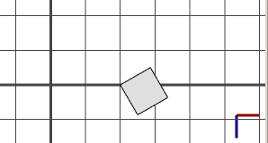

t operation
Syntax
t(tx, ty, tz)
Parameters
- tx, ty, tz (float)
Amount to translate in each direction.
Description
The t operation translates the scope by the vector (tx, ty, tz), i.e. the vector is added to scope.t. If the scope rotation is non-zero, then the passed translation vector is rotated around the pivot, with angles (scope.rx, scope.ry, scope.rz), first. In other words, the translation is relative to the scope axes.
The relative operator ' permits a convenient notation relative to the scope size: t('tx,0,0) is equivalent to t(tx*scope.sx, 0, 0).
Note: t(x,y,z) is the same as translate(rel, scope, x, y, z).
Related
Examples
Translate - Rotation Concatenation
A--> primitiveCube()This is the initial shape we start with. |
|
A--> primitiveCube() t(2,0,0)First a translation of two units along the x-axis. |
|
 |
A--> primitiveCube() t(2,0,0) r(0,30,0)Then a rotation of 30 degrees around the y-axis. |
A-->
primitiveCube()
t(2,0,0)
r(0,30,0)
t('2,0,0)
And another translation of 2 units along the x-axis.Note:
|
Copyright ©2008-2021 Esri R&D Center Zurich. All rights reserved.